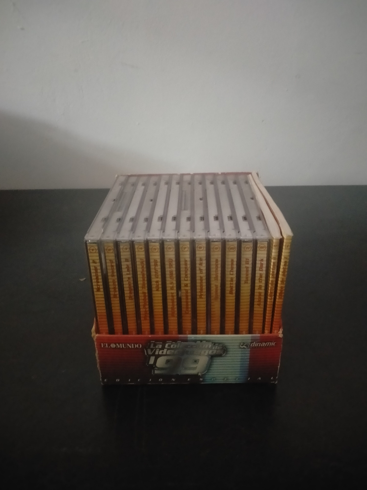

Ficha #000000
La Colección de Videojuegos '99
La Colección de Videojuegos '99 es una colección española para PC distribuida en quioscos por el diario El Mundo en colaboración con Dinamic Multimedia. Publicada entre 1998 y 1999, reunió doce videojuegos comerciales en CD-ROM pertenecientes a géneros muy diversos: Screamer 2, Broken Sword: La Leyenda de los Templarios, Dragon's Lair II: Time Warp, Pro Pinball: Timeshock!, Kick Off 98, PC Basket 6.5, Command & Conquer, Prisoner of Ice, Speed Demons, Battle Chess, Tunnel B1 y Alone in the Dark. La selección combina títulos para MS-DOS y Windows 95 y constituye un ejemplo representativo de las colecciones de videojuegos distribuidas junto con periódicos durante la expansión doméstica del CD-ROM en España. Su presentación conjunta, formada por estuches jewel case numerados, expositor de cartón y dos libros de pistas, posee especial interés para documentar la distribución popular, asequible y seriada de videojuegos de PC a finales de los años noventa.
- Formato
- Jewel Case
- Plataforma
- MsDos Win95
- Género
- Compilación Aventura gráfica Estrategia en tiempo real Carreras Simulación deportiva Pinball Acción Ajedrez
- Serie
- Todos Jewel Case Dinamic multimedia
- Desarrollador
- Milestone, Revolution Software, ReadySoft, Cunning Developments, Anco Software, Dinamic Multimedia, Westwood Studios, Infogrames, East Point Software, Interplay Productions, NEON Software
- Distribuidor
- Dinamic Multimedia, El Mundo
- EAN
- —
Contenido de la edición
- Expositor de cartón de la colección
- 12 CD-ROM en estuches jewel case
- Screamer 2
- Broken Sword: La Leyenda de los Templarios
- Dragon's Lair II: Time Warp
- Pro Pinball: Timeshock!
- Kick Off 98
- PC Basket 6.5
- Command & Conquer
- Prisoner of Ice
- Speed Demons
- Battle Chess
- Tunnel B1
- Alone in the Dark
- Libro de pistas I
- Libro de pistas II
Preservación
- Protección
- No determinado
- Formato recomendado
- BIN/CUE
- Jugable en virtualización
- Sí
La colección reúne doce títulos independientes que pueden utilizar sistemas anticopia distintos. Para una preservación rigurosa se recomienda crear una imagen individual de cada CD-ROM, preferentemente en BIN/CUE, registrar las sumas de comprobación y digitalizar las carátulas, los libros de pistas y el expositor. La ejecución virtual debe evaluarse por separado para cada juego mediante DOSBox o una máquina virtual con Windows 95.